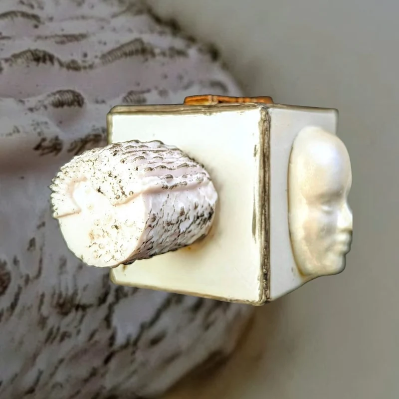
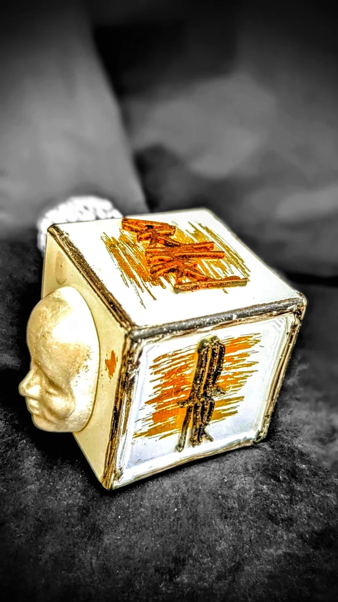

Scent descriptions · 02
Replace this line with your own standing first paragraph — the one that says what the house is before the introduction begins.
00
Replace this paragraph with your own introduction to ADAR — what the house is, how you came across it, and what the eleven below are. This is placeholder writing; everything after it is yours.
Placeholder: a second paragraph, here so the introduction has the shape it will have once it is written. The note below is not placeholder — it is yours, and it stays.
Additionally, something worth noting about ADAR is that it has a DNA for sure. You can tell based on the turpentine quality that intelligently selects for the top parts of the turpentine; the stuff that makes your nostrils swell as if you were smelling menthol (an effect referred to as trigeminal activation), without that dense and forest-y face that turpentine often comes with. You can find this in quite a lot of their fragrances, as will be noted in my descriptions. I have coined the term ADAR Effect™ for this phenomenon.
I
Three held against something.
01 – 03
Top
if you romanticize drowning, then this opening would probably smell like that.
It is also toxicly sweet. Not overly, but it feels like a malignant sweetness.
It is SO dense too.
It could be an interpretation of a cloud actually. A raincloud before the thunder breaks. Two good friends of mine also called it a Tornado or a Hurricane smell, which I cannot disagree with (David and Marta to give credit).
I also smell abrocinide, though i may be wrong about that. If I'm right, then it was dulled down and diluted.
the only progression I recorded of Amber Zero is that it remained true to its nature throughout; still having that “bottom of the blackest sea” or “Dark matter in outer space” vibe. It is harsh and in-your-face as a character.
Sidenote 1
It smells a little like zoologist’s squid, if you go deeper to like +2000 meter of depth. and kill the squid. It is abraisive like that.
Sidenote 2
This could also smell like a forge in a mountain, like from the hobbit. Abrasive and metallic. this is my most accurate take i believe.
Sidenote 3
as while writing down my notes; I digressed and wrote down a 15 page theory about the progression of this fragrance, going as far as to synthesize a mathematical model for it. To see it, please go into theories under section (FILL IN LATER); or click here.
the gist of the theory states that this is a simple fragrance and it achieves something phenomenal with a very minimal composition. It is more linear compared to the other ADARs that I have smelled at the time of writing this review. The complexity and excitement of this fragrance comes from the fact that its blending is non linear. The character remains almost identical throughout, but the way that you can smell the same thing differently as the fragrance progresses is truly spectacular.
ADAR, good job dude.
On paper
This smells like a rabbit pen in the backyard of a house in Europe, somewhere around July or August and in the morning: “Babiččin dvůr v 8 ráno.” Rabbits, chickens, grass, rasspberry bushes, an old trampoline, hay stacks stored up in the barn, stone house, stone steps and regularly tended-to agricultural fields, with seasonal vegetables being grown.
This is nostalgic to me personally.
it also has the ADAR DNA, but not The ADAR Effect™.
On skin
On skin, this takes on a more aldehydic character, and more storm like too. Like New Look by Dior, but better, more complex and less of that mass appeal. I would 100% wear this. Super pleasant in that cloudy-lightning way.
This is my favorite
Top
100% ADAR DNA without The ADAR Effect™.
THE BEST FLORALS. I can smell spices in the background too. This is what I imagine a romantic ideation to smell like. it is inviting but uncertain too.
This also dissipates into a more deranged floral? It feels like it goes in the same direction as Bad Lily, but extreme (as in taking something vaguely romantic or positive in some way and introducing “the other side” of said thing).
If Caravaggio himself destroyed a garden in pursuit of destruction to draw, this would be the scene.
Fuck it; Chernobyl. This smells like what i imagine Chernobyl smells like (noting that I mean in the more recent years).
Mid I
it smells like an old lake, with some rotting flowers near it. Surprisingly, I would say it comes closest to De Profundis in effect, but from a complete different direction.
Mid II
If the well in Haruki murakami’s The Wind Up Bird Chronicles smelled like something, it would be this.
There is a hint of sourness in it; otherwise it feels wet and a bit like the character of Pluie Sur Ha Long by Ella K, but made darker by the realistic (and wet) stone.
Base
dry down is still damn good.
It is very very smooth; and it feels really well blended. It has that similar texture to Alta Luna, which i mean as a top tier complement.
There are hints of florals, with a lactonic center. It has a “hay” quality too, and feels old. I would not put it past it to try and iterate a romanticized version of something like ruins in a rocky setting or a forest.
This reminds me of Friereren somehow. That scene where she was picking weeds and Himmel recruited her to join their party. In fact, I can imagine Frieren smelling like this, period.
C'est vraiment incroyable, ça.
I could also interpret this as a “Girl from Ipanema” equivalent of a slightly colder and non-beachside setting.
This is a 10/10. maybe more. I actually love this.
II
Three kept on the edge of falling.
04 – 06
Top + mid
Pinnacle of using middle notes like orange blossom for their uplifting and freshening purpose. It is citrusy, but like the old italian rich man's villa on the Amalfi Coast.
It really does feel like an old smell. An iteration of a fougère, similar to those that substitute the status quo lavender with Iris, or Iris butter, but better. It has that smoothness, but it also feels like marble. Maybe thats why i get the villa.
Base
Towards the dry down it is tame, retaining the same character.
Top
This feels like a borrowed characteristic of yellow florals. It has the smoothness of Ylang-Ylang, in that the texture of the smell might be more recognizable than the smell itself (also similarly to milky oolong tea). Asides from this characteristic, it is sweet, resembling a citrus artificial flavouring.
I personally do not like this opening, but I know that this would be heavily disputed, as objectively speaking it is really good.
To contrast the Ylang-ylang-ness (for the lack of a better word), there is some turpentine-esque character to this too, but more holistic and well more blended. It is like the top facets of galbanum and/or turpentine. In this character, it is similar to Tombstone's Evergrow (though, minus the greenness).
Mid
Eventually, I picked up on something that might be honey? It is sweet and tingly. Waxy too.
Base
Finally, α11 settles into a very spicy-forward character. Almost oud-y too, but still with that galbanum/turpentine quality.
Top
Wow?
This starts with trigeminal activation in the start (that ADAR Effect™); and has that menthol-y part of turpentine. Like the smell of pine, but only its character rather than the smell itself. It also lacks the turpentine abrasiveness. It does turn sweet too. Like an old grandma's couch. 100% there is something that introduces a dusty facet to this; maybe honey? Mastic resin? I dont know.
Random thought but this does smell what a fairytale dragon might smell like
Mid
This then changes to something that is incredibly smooth. even more so than α11. Consistently smooth throughout its character.
It then bleeds through into a musky and clean, somewhat watery, smell. SOMEHOW, it feels animalic in the way that it is clean. If i were to put a label on it, then maybe like saliva.
Base
the dry down of this is actually beautiful. It is so smooth, and so delicate, but still characteristic. In books the description “milky skin” would correspond to this smell i think. Despite that, there is a facet of sometthing like cumin (maybe?) This could be interpreted as a sweet fragrance too, but it feels like the most idealistic version of that. This is what I imagine Cupid would smell like, or maybe Aphrodite's sweat.
III
Three turned inward.
07 – 09


Top
NGL, ADHD is not a suitable name in my POV. I feel if you took a tight rope and turned it into smoke, and built the perfume around that image, then that is what this would be centered around. It feels chaotic, and it feels like the act of spiraling (not physically; obviously). On the complete other interpretative end of this, i could see it smelling like a reverie.
Sidenote
This fragrance feels REAAAAAAALLLLLLLY chaotic, but from one facet only: its sweetness. It feels all over the place. This is what an epileptic seizure might smell like; or how one might describe the memory of a first orgasm.
Mid
Going slightly more smokey now, with the ever persisting The ADAR Effect™
very sweet, and the chaos does calm down a bit.
Base
dry down notes lost on this one. Another perfume leaked on the the strip.
Top
This is good too, in that it combines warmth and something minty (the ADAR Effect™!!!)
It smells like a burrow from a children's book. Instead of support beams, you have roots. But otherwise the smell has that watercolour and idealism smoothness to it. I like it. It is also more subtle than the other ADAR works so far.
Mid I
it seems to be going towards a more galbanum-y direction
Mid II
that galbanum-y facet? yeah all gone. It went the complete other direction and is smooth picturesque and still retaining that smoothness. + The ADAR Effect™.
...also slightly toothpasty.
Base
no dry down down notes. I lost the strip.
Top
Image: Ivy invaded electronics. I can't quite explain it.
This has that same trigeminal activation as many of this house (that ADAR Effect™ really shines through on this one). It also has some resin that is additive to this character. My best guess is some form of mastic.
this smells like a shaman concoction. this is difficult to evaluate.
This also feels Georgian. I also cannot explain this.
Mid
It smells like a dusty basement + incense, with a slight churchy character. Its also very lightly dusty.
I really like this one, even if it isn't iconically OUT THERE, as the other ones.
Base
Dry down is slightly darker than what i previously described in the mid section. The trigeminal activation is still there somehow too actually! I find that really impressive. I think it may be from the incense.
This is damn nice.
IV
The two that stand outside the trilogies.
10 – 11
I have not smelled this yet.
I have not smelled this yet.
Pictures The photograph standing with each fragrance is ADAR’s own, from adarperfumes.com.